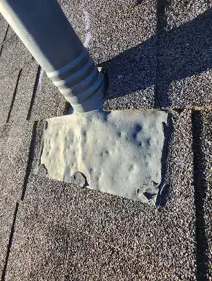
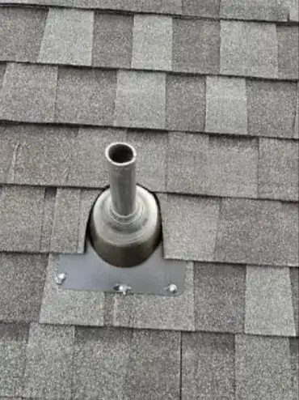
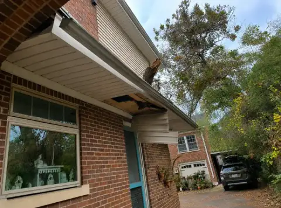
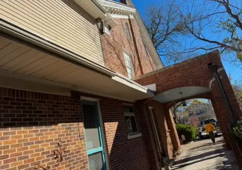
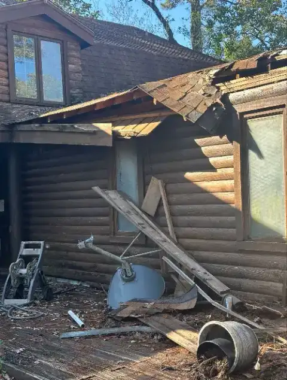
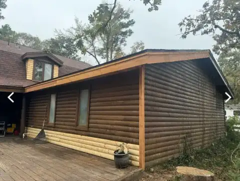
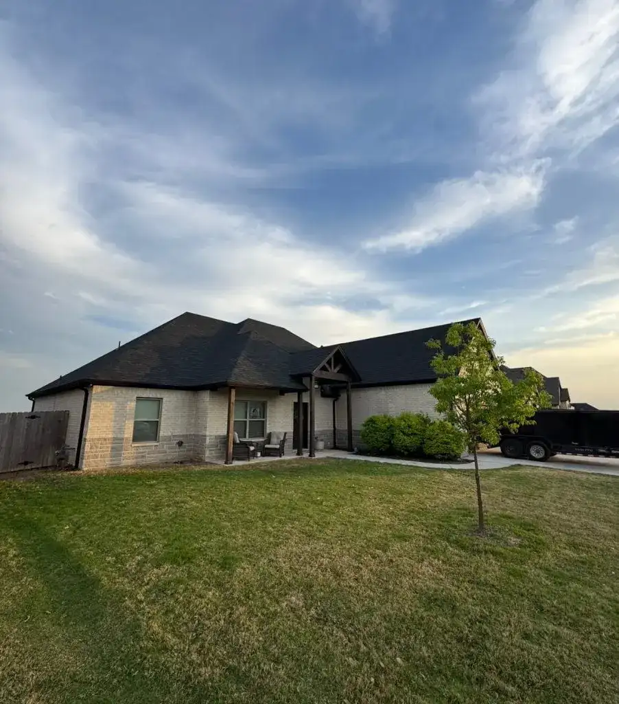

Texas · Oklahoma · South Florida
Storm and hail restoration, full replacements and commercial roofing, with a lifetime labor warranty on every roof we install.
The storm
We inspect for free, photograph every hit and put it in writing. If it's an insurance claim, we walk you through it.
Tear-off
Every damaged layer comes off, so the crew sees the bare deck before anything new goes on it.
Dry-in
Underlayment over the whole deck, metal drip edge on every eave, then shingles row by row from the gutter line up.
Finished
30-year manufacturer shingle warranty. Lifetime labor warranty for as long as you own the home.
Then the next one
Crews out of The Colony, Austin and Midland, covering Texas, Oklahoma and South Florida.
Get on the scheduleRendered sequence. Every photo below this point is a real Summit job.
The roof, layer by layer
Finished roofScroll to take it apart
The plywood everything nails to. We see it bare on every tear-off, so soft spots get replaced, not buried.
Self-sealing membrane along the eaves and in valleys, where leaks start.
The water barrier under everything. If a shingle ever lets go, this keeps you dry.
Metal flashing on every eave and rake that turns water into the gutter, not your fascia.
A sealed first row at the edge, where wind tries to lift a roof first.
Laminated and heavier than 3-tab. IKO and TAMKO, installed by a crew certified by both.
Lets attic heat out along the peak, so shingles don't cook from underneath in August.
The free inspection
This is a real Summit inspection: chalk on every hail strike, a photo of each one, and a written report you keep, whether or not you hire us. It's what the adjuster sees.

0 hits circled on this slope






Shot from our drone
Real crews. Real roofs. All Summit.
Recent roofs



Where we work
North Texas hail, Panhandle wind, Gulf hurricanes. Summit runs crews out of three Texas offices and works across Texas, Oklahoma and South Florida, so a roof gets built for the weather it'll actually see.
Lifetime
labor warranty on every roof we install


What we do
Homeowners, on camera
5.084 five-star Google reviews
After a recent storm, our roof was severely damaged. Summit responded quickly with excellent emergency repairs. They handled everything start to finish.
Bryan M., storm damage repair
The team was professional, efficient, and finished ahead of schedule.
Emily R., roof replacement
The crew was punctual, courteous, and meticulous. The new roof looks fantastic.
James L., roof installation
After you call
Top to bottom, every issue photographed. Free, and you keep the report.
Material options and financing laid out in plain language. No pressure, no work you don't need.
Most homes. Certified in-house crew, property protected, site cleaned every day.
Final check side by side, then we register your warranties.
Pay over time through Summit's financing partners. No prepayment penalties, no equity or appraisal required, fast decisions. For qualified applicants.
Free inspection
Tell us where and what happened. We'll call to set a time, inspect for free and give you a written report with photos.
(972) 333-3365Mon–Fri 7am–6pm · Sat 9am–6pm CST
Call right away for an emergency inspection. We document the damage, tarp it to stop leaks and walk you through the insurance claim so the repair gets handled quickly and correctly.
Most residential roofs are installed in one to two days, depending on size, pitch and complexity. We confirm the exact timeline in your estimate.
A 30-year manufacturer warranty on shingles and a lifetime labor warranty covering material defects and workmanship. Future hail or wind damage is what your insurance and our storm team handle.
It depends on material, roof size, pitch and scope. The estimate is free and in writing, with financing options for qualified applicants.
Missing or curling shingles, leaks or stains inside, granules in the gutters, daylight in the attic, or anything after hail or high wind. Book an inspection and we'll tell you honestly which one makes sense.